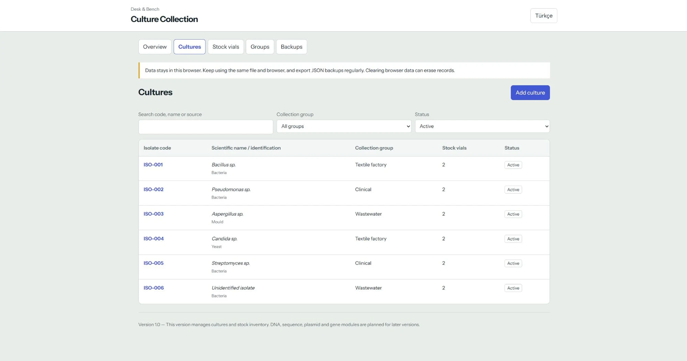

Culture Collection
Keep culture records and stock locations on your own computer. Define your own groups, add multiple vials per isolate and export backups.
Version 1.3. Offline HTML tool for one computer. No account or installation.

What Culture Collection does
An inventory for cultures and their stock vials, with groups that fit your work.
Your own groups
Clinical, wastewater, textile factory or any name you choose. Rename a group without losing its culture links.
Cultures and stock vials
Record isolate codes, identification, source and dates. Attach several uniquely coded stock vials to each culture.
Storage locations
Keep temperature, device, shelf, rack, box and position with each vial. Mark stock as available, in use or depleted.
Search and backups
Search by code, name, source or storage location. Archive records or move them to recoverable Trash. Export JSON backups and CSV reports.
How to use
- Download the ZIPUse the button above.
- Extract to a permanent folderKeep the file location and browser the same.
- Open culture-collection.htmlUse Chrome, Edge or Firefox.
- Create groups and export backupsAdd your cultures and vials. Keep regular JSON backups.
Questions
Where are records stored?
In this browser’s local database, not inside the HTML file. Nothing is sent to a server. Clearing browser data or using private browsing can lose records. Keep JSON backups.
How do I move or update the app?
Export JSON before moving, renaming or updating the file. Open the new copy and restore the backup. Restore replaces the entire collection; it does not merge records. Copying HTML alone does not transfer records. Version 1.3 reads earlier backups; backups made by 1.3 require 1.3 or newer.
Does it sync between computers?
No. This version is for local use on one computer. There is no Firebase connection or automatic cloud synchronization. CSV exports are reports; use JSON for restoration.
Does it remind me of anything?
Yes. Choose a viability check interval of 1–120 calendar months in Settings (default six). Record each vial’s last check date or use “Mark checked today”, then save. Due vials appear on Overview; a new check date moves the next reminder forward. After every change, a bar at the top shows how many changes you have made since your last JSON backup, with a button to download a new one. The app also warns you when you store a vial in a position that is already in use.
Can I undo a deletion?
Yes. Cultures and vials move to Trash and can be restored there. Restoring a culture brings back its linked current vials; vials previously moved to Trash separately stay there. Nothing is deleted automatically. Codes stay reserved. JSON backups include Trash, check dates and settings; CSV reports include current records only.
Can I change it or build on it?
Yes. Culture Collection is open source under the MIT License. You may use, change and share it, including in your own projects, as long as you keep the copyright notice and the licence text, which credit the original author. The source is on GitHub and the licence is in LICENSE.
Does it include DNA and sequence records?
This version covers culture and stock inventory. DNA, sequence, plasmid and gene modules are not included.